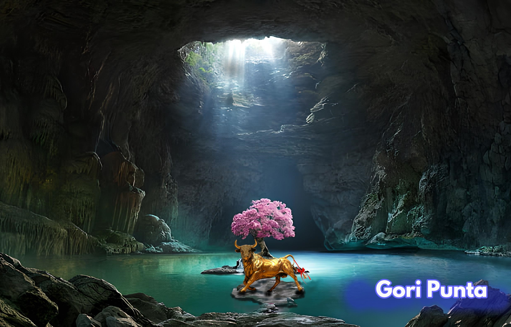

Relatos sobre sucesos sobrenaturales, dioses o héroes, que explican un aspecto de la realidad de manera simbólica.
Gori Punta Narración de hechos fabulosos o personajes fantásticos situados en un contexto histórico real.
created with
Website Builder Software .